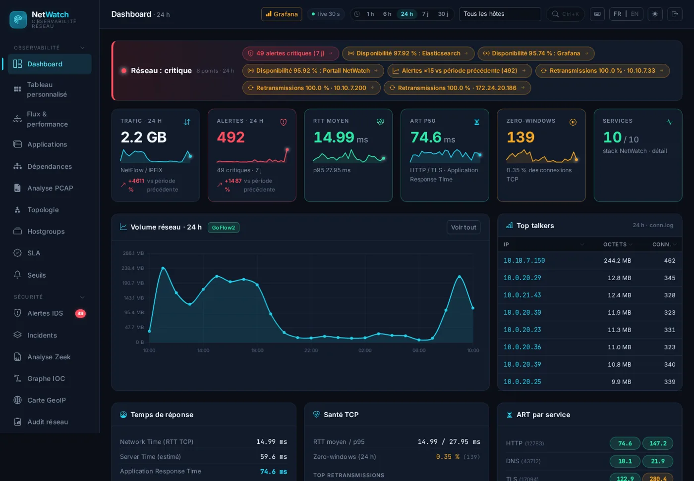
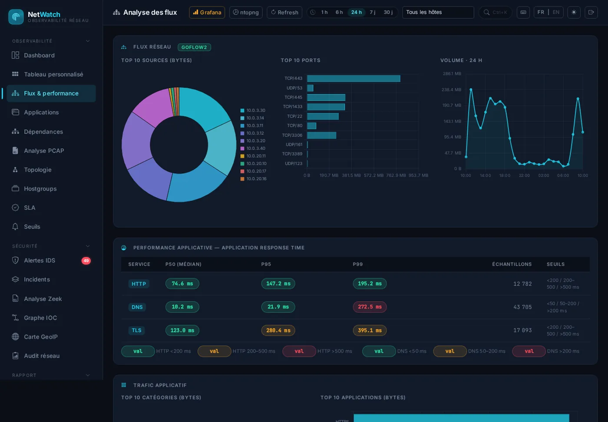
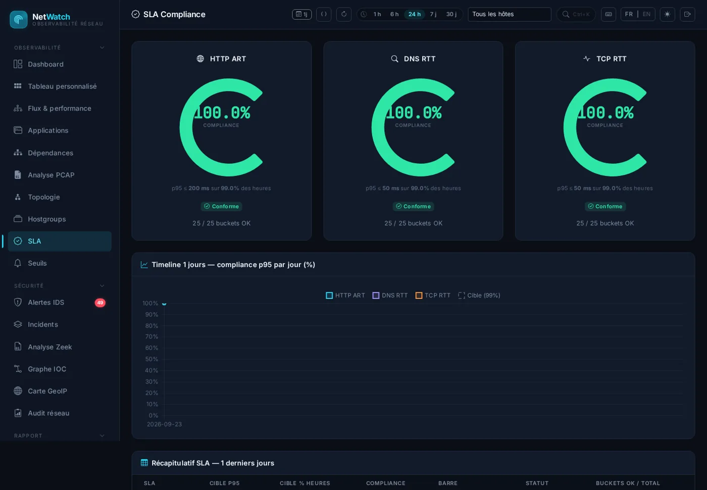
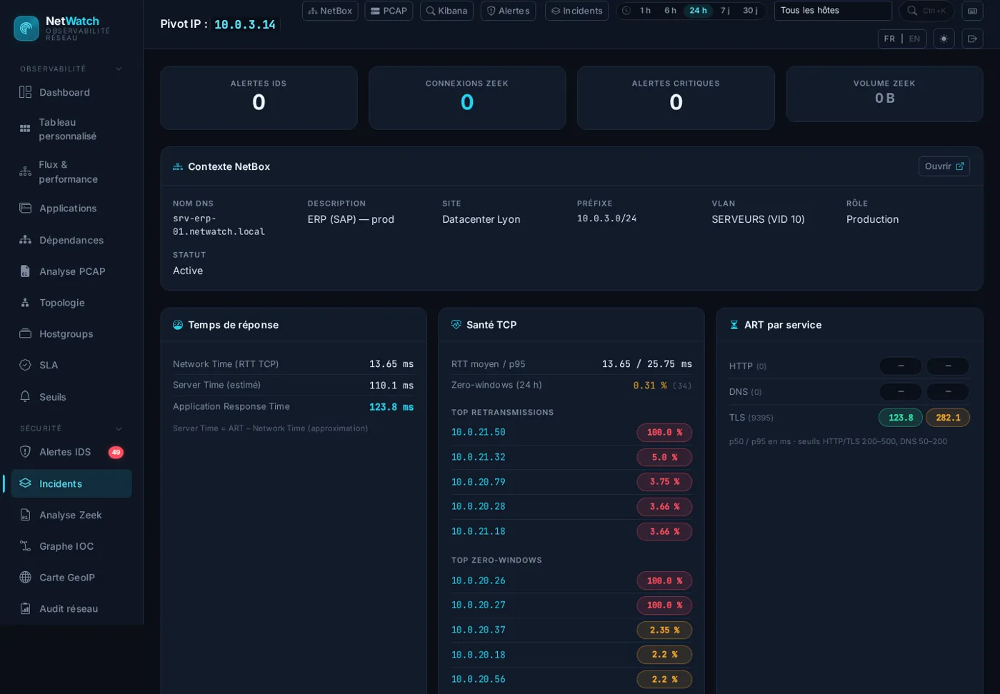
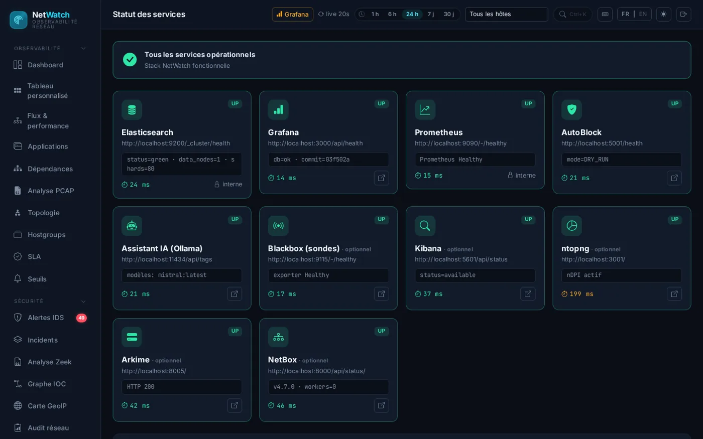
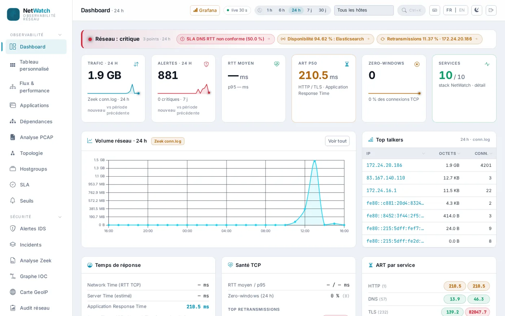

Voir et protéger son réseau, sans SOC et sans budget grand compte.
NetWatch réunit la supervision de la performance réseau et la détection des menaces dans une seule sonde, 100 % sur site, avec une IA locale qui explique ce qu'elle voit. Open-source, français, au prix d'une PME.
Un port SPAN, une VM Ubuntu, une commande : ./install.sh. Licence AGPL v3 — rien ne sort de votre réseau.

Ce que vous pouvez attendre, dans cet ordre
Pas une liste de fonctions : trois choses que vous pourrez constater vous-même le premier jour.
En 30 minutes, je vois mon réseau
Top talkers, applications, interfaces saturées, temps de réponse, alertes — tout dans un seul portail, sur une plage de temps globale de 1 heure à 30 jours.
Rien ne sort de mon réseau
Capture, analyse, stockage, IA d'aide à l'analyse : tout tourne sur la sonde. Aucune télémétrie, aucun appel sortant. L'argument souveraineté, RGPD et secteurs sensibles.
Je peux le montrer à ma direction
Rapport exécutif PDF, SLA en heures ouvrées, matrices NIS2 / ISO 27001 / ANSSI / NIST CSF (édition Pro) — ce qu'un RSSI ou un DSI attend d'un outil qu'il paie.
Une question d'exploitant, une page qui répond
Le portail parle le vocabulaire des exploitants réseau — ART, santé TCP, SLA, flux — dans une seule interface.



srv-erp-01 · ERP · Datacenter Lyon · VLAN serveurs, puis les mêmes widgets de performance pour cet hôte, et l'accès aux logs et aux paquets.

Ce que la sonde fait
Supervision de la performance et détection des menaces dans la même sonde, avec des briques open-source éprouvées.
Flux réseau
NetFlow v5/v9, IPFIX, sFlow collectés par GoFlow2 ; repli automatique sur Zeek si vos équipements n'exportent pas. Top talkers, top ports, volume, dictionnaire applicatif SNI / domaine.
Temps de réponse & santé TCP
Application Response Time p50 / p95 / p99 par service (HTTP, DNS, TLS), RTT, retransmissions, ratio zero-window par hôte — pour trancher « réseau ou application ? ».
SLA passif + sondes actives
Conformité p95 par heure, heures ouvrées vs nuits et week-ends, timeline par jour. Sondes HTTP, ICMP, TCP, DNS (Blackbox) déclarées dans un fichier rechargé à chaud.
Topologie, SNMP, capacité
Carte L2/L3 découverte par LLDP et ARP, interfaces SNMP (débit, saturation), capacity planning : nombre de jours avant saturation, par interface.
Détection : trois moteurs
Zeek, Snort 3 et Suricata 7 sur le même trafic, corrélés par Community ID ; beaconing C2, connexions longues, DNS tunneling ; MITRE ATT&CK, threat intel, fingerprinting JA3 / HASSH.
La preuve, quand il la faut
Full packet capture indexée (Arkime), recherche dans les logs (Kibana), classification nDPI (ntopng), analyse d'une conversation TCP — ouverts depuis le portail, avec le bon filtre.
Inventaire au centre
NetBox (IPAM) comme source de vérité : une adresse devient un serveur, un site, un VLAN. Les groupes d'hôtes viennent des préfixes — pas d'un tableur.
IA locale · Pro
Explication d'une alerte, narration d'une conversation TCP, résumé exécutif — par un modèle qui tourne sur la sonde (Ollama). Aucune donnée sortante ; activable en deux lignes de configuration.
Rapports & conformité · Pro
Rapport exécutif HTML / PDF à la demande et planifié, matrices NIS2 · NIST CSF 2.0 · ANSSI · ISO 27001, intégrations ITSM et messagerie.
Un pipeline capture → analyse → stockage → restitution
Entièrement conteneurisé (Docker Compose). Une VM suffit ; deux si vous voulez séparer le port SPAN du stockage.
Trois étapes, pas de projet
Un port SPAN, une VM
Copiez le trafic à surveiller vers une interface de la VM (Ubuntu 22.04 / 24.04, 4 vCPU, 16 Go). Vos équipements peuvent aussi exporter du NetFlow vers la sonde.
Une commande
./install.sh installe Docker, génère les secrets, détecte l'interface, démarre les 24 services, initialise les bases et installe le portail en service. Relançable sans risque.
Le portail
Connectez-vous, importez vos préfixes depuis NetBox ou un CSV, déclarez vos sondes actives. Les premiers flux, temps de réponse et alertes sont là en quelques minutes.
Un seul dépôt, deux éditions, un module IA
Community reste complète pour une sonde qui fonctionne. Pro ajoute ce qui fait gagner du temps à celui qui paie. Jamais payant : documentation, moteurs, dashboards, installation, health check.
Tout ce qu'il faut pour une sonde complète et utile en production.
- Trois moteurs de détection, comportemental, threat intel publique, AutoBlock
- Flux NetFlow/IPFIX/sFlow, SNMP, topologie, capacity planning, VoIP, zero-window
- Portail (alertes, flux, top talkers, pivot IP, SLA brut, seuils, hostgroups), 13 dashboards Grafana
- Kibana, Arkime, ntopng, NetBox intégrés ; sondes actives ; dictionnaire applicatif de base
- install.sh, HTTPS unique, sauvegarde / restauration, mise à jour, health check, documentation
Ce qui fait gagner du temps ou rassure celui qui paie — et l'humain derrière.
- IA locale : explication d'alerte, résumé exécutif, narration PCAP
- Rapports PDF planifiés, rapport hebdomadaire direction, matrices de conformité mises à jour
- SLA heures ouvrées / hors heures, engagements par service
- Intégrations ITSM (ServiceNow, JIRA), workflows n8n packagés, Teams / Slack, enrichissement IOC
- Dictionnaire applicatif étendu et feed d'intel curé, maintenus chaque mois
- Comptes nominatifs, rôles, SSO (OIDC / LDAP)
- Multi-sites, console centrale (MSP)
- Support e-mail J+1, mises à jour prioritaires, versions LTS
Une sonde chez vous, sur un périmètre que vous n'instrumentez pas aujourd'hui.
- Une VM, un port SPAN, une commande — édition Community
- Critères de succès fixés avant d'installer
- Un point d'étape par semaine, un retour écrit à la fin
- Aucune donnée ne nous est transmise : vous exploitez, nous accompagnons
- Pour les MSP : un client, puis on parle console centrale
Entre les outils gratuits et les plateformes grand compte
Trois familles existent aujourd'hui ; NetWatch occupe l'espace qu'elles laissent aux PME et aux MSP.
| Famille | NPM (flux, ART, SLA) | NDR (détection) | IA locale | 100 % sur site | Budget PME | Langue / support |
|---|---|---|---|---|---|---|
| NetWatch | oui | oui | oui (Pro) | oui | oui | français, support Pro |
| Suites de sécurité réseau open-source | — | oui | — | oui | gratuit | anglais, communautaire |
| NPM commerciaux de référence | oui | partiel | — | oui | 5 à 6 chiffres / an | intégrateurs |
| NDR cloud à base d'IA | — | oui | dans le cloud | non | 5 à 6 chiffres / an | via partenaires |
| NDR souverains qualifiés | — | oui | selon l'offre | oui | grands comptes, OIV | français |
| Supervision par métriques / SNMP | SNMP seulement | — | — | oui | oui | oui |
NetWatch reproduit les fonctions NPM essentielles (flux, temps de réponse, santé TCP, SLA) sans DPI propriétaire, et ne vise pas les réseaux à plusieurs dizaines de Gb/s ni la qualification ANSSI — voir les limites ci-dessous.
Rien ne sort. Vraiment.
La question qu'on nous pose en second, à laquelle on répond en premier.
- Tout sur la sonde — capture, analyse, stockage, restitution, IA.
- Aucune télémétrie, aucun appel sortant — GeoIP et threat intel sont des fichiers locaux, mis à jour quand vous le décidez.
- Code AGPL v3 — auditable, forkable, sans dépendance à un éditeur ; briques standard (Zeek, Suricata, Elasticsearch, Grafana).
- Preuves pour DORA / NIS2 — journalisation horodatée, PCAP, détection, rapports ; le durcissement et la rétention se cadrent avec vous.
- Français — l'outil, la documentation, le support. Conçu en France, pour les PME et MSP francophones.
Ce que NetWatch ne fait pas
Assumé, écrit, répété — mieux vaut le lire ici que le découvrir en pilote.
- Pas de SLA contractuel 24/7 ni de TAM éditeur
- Pas de capture 10-40 Gb/s, pas de sonde matérielle
- Pas de DPI propriétaire (SNI + nDPI : 70-80 % des cas)
- Pas de qualification ANSSI ni de Critères Communs
- Pas de SaaS multi-tenant hébergé (phase 1)
- Une sonde ≈ un site ; console multi-sites en cours (Pro)
- Zero-window compté, pas mesuré en durée
- v2.1 : validée en labo et sur Proxmox, premier pilote client à faire
Une VM, une commande, trente minutes
Prérequis : Ubuntu 22.04 ou 24.04, 4 vCPU, 16 Go de RAM, 120 Go de disque (plus un volume pour les PCAP), une interface reliée à un port SPAN.
# 1. Récupérer le dépôt
git clone https://github.com/Ourslow/Netwatch.git && cd Netwatch
# 2. Installer — édition Core, accès direct par port
./install.sh
# ou : point d'entrée HTTPS unique (portail + Grafana + Kibana + Arkime + NetBox)
./install.sh --public-url https://sonde.pme.lan
# ou : + assistant IA local (Ollama, 4-5 Go de RAM en plus)
./install.sh --ia
# 3. Vérifier
make health # exit 0 = tout va bienCe que fait install.sh
- Installe Docker si besoin, règle
vm.max_map_count - Génère les secrets (jamais écrasés ensuite), détecte l'interface de capture
- Démarre les services, initialise Elasticsearch, NetFlow, Kibana, Arkime
- Installe le portail en service systemd, lance
make health
Ensuite
make demo-netbox·make demo-data— données de démonstrationmake backup/restore— configuration et snapshot Elasticsearchmake upgrade— mise à jour versionnée, changelog- Déploiement 2 VM (Sensors / Data) documenté pour le port SPAN dédié
Avant de nous écrire
J'ai déjà un outil de supervision réseau. Est-ce que NetWatch le remplace ?
Pas nécessairement. Sur un grand SI, NetWatch couvre les périmètres que l'outil en place ne couvre pas — agences, sites secondaires, labs, hors-production — avec le même vocabulaire (ART, santé TCP, SLA, flux). Sur une PME sans supervision de flux, c'est souvent le premier et le seul.
Pour quelle taille de réseau ?
La cible : 50 à 500 postes, un à trois sites. Une sonde par site, autonome. Validé sur du trafic de PME et de laboratoire, pas en multi-Tbps — nous le disons clairement plutôt que de le découvrir en pilote.
Où vont mes données ?
Nulle part. Capture, analyse, stockage et IA tournent sur la sonde, chez vous. Il n'y a ni télémétrie ni appel sortant obligatoire ; les mises à jour de threat intel et de GeoIP sont des fichiers que vous décidez de rafraîchir.
Combien ça coûte ?
L'édition Community est gratuite (AGPL v3) et complète pour une sonde qui fonctionne. L'édition Pro est un abonnement par sonde — hypothèse 99 à 149 € par mois, engagement annuel — qui finance l'IA, les rapports, les intégrations et le support. Un pilote se fait toujours en Community.
Et l'IA, concrètement ?
Un modèle de langage local (Ollama, Mistral par défaut) lit une alerte, une conversation TCP ou les KPIs du jour et les explique en langage clair. Il ne décide rien, ne bloque rien, et ne voit que ce que vous lui montrez. Il demande 4 à 5 Go de RAM en plus sur la sonde ; un modèle plus léger est à l'étude pour les petites machines.
Qui est derrière ?
Un projet open-source français, développé en public depuis le premier jour sous licence AGPL v3. Le produit est en cours de structuration (éditions, support, nom commercial) ; les échanges se font sur GitHub, et les premiers pilotes servent à décider de la suite avec ceux qui l'utilisent.
Voyez votre réseau ce soir.
Une VM, un port SPAN, une commande. Si ça ne vous montre rien d'utile en 30 minutes, vous n'aurez rien signé.